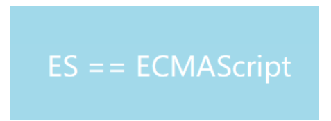

1.ES6+ 简介
ECMAScript 6， 简称 ES6。 于2015年6月正式发布，是JavaScript语言的下一代标准。
1.1ECMAScript 和 JavaScript
- ECMA（European Computer Manufactures Association ）是欧洲计算机标准化协会的简称。
- 1996年JavaScript的创造者 Netspace（网景公司），将JavaScript提交给ECMA进行管理，希望JavScript能够成为国际标准。
- 1997年 ECMA 发布 262 号标准文件，规定了浏览器脚本语言的标准，将其命名为 ECMAScript。
- ECMAScript是JavaScript的规格，JavaScript是ECMAScript的实现。另外，以ECAMScript为规格的语言还有 JScript 和 ActionScript。
1.2 ES6 和 ES2015
- ES6的第一个版本在2015年6发布，正式名称是《ECMAScript 2015标准》，故也称之为 ES2015。
- 此后，每年的6月都会发布新的版本，2016年6月发布了 ES2016，也被称之为 ES7；2017年6月发布了ES2017，也被称之为ES8。
- ES6 在原先的 ES5 基础上加入了大量的新特性，但是此后的版本只是进行了小幅修订，所有有时候我们使用 ES6 来代指 ES6 以及之后的版本。
- 从ES6开始，每年发布一个版本，版本号比年份最后一位大1
1.3 ECMAScript 时间节点
- ECMAScript 1（1997 年 6 月）：规范第一版。
- ECMAScript 2（1998 年 6 月）：为了同步 ISO 标准，引入了一些小更新。
- ECMAScript 3（1999 年 12 月）： 3.0 版本是一个巨大的成功，得到了广泛的支持，奠定了JavaScript的基础，我们一开始学习的JavaScript 其实就是3.0版本。
- ECMAScript 4（2008 年 7 月废除)：本来是一次大规模升级（静态类型、模块、命名空间等），但跨度过大，出现了分歧，最终没能推广使用。
- ECMAScript 5（2009 年 12 月）：变化不大，加了一些标准库特性和严格模式。
- ECMAScript 5.1（2011 年 6 月）：又一次小更新，为了同步 ISO 标准。
- ECMAScript 6（2015 年 6 月）：一大波更新，实现了当年 ES4 的许多设想，并正式改为按年份命名规范版本。
- ECMAScript 2016（2016 年 6 月）：第一个年度版本，与 ES6 相比，发布周期较短，新特性也相对少些。
- ECMAScript 2017（2017 年 6 月）：第二个年度版本。
- 以后的 ECMAScript 版本（ES2018、ES2019、ES2020等）都在 6 月正式获准生效。
1.4 ECMAScript 语法标准制定流程
任何人都可以向标准委员会（又称 TC39 委员会）提案，要求修改语言标准。一种新的语法从提案到变成正式标准，需要经历五个阶段：
- Stage 0 - Strawman（展示阶段）
- Stage 1 - Proposal（征求意见阶段）
- Stage 2 - Draft（草案阶段）
- Stage 3 - Candidate（候选人阶段）
- Stage 4 - Finished（定案阶段）
只要进入第 4 阶段就已经算是标准特性了，会在下一个 6 月正式纳入标准。
ECMAScript 当前的所有提案，可以在 TC39 的官方网站 GitHub.com/tc39/ecma262 查看。
1.5 ES6 的兼容性问题
- http://kangax.github.io/es5-compat-table/es6/ 可以查看各大平台对ES6的支持情况。
- 目前最新版的各大浏览器，尤其是 Chrome 已经能够支持大部分ES6的语法。
- node.js 也支持 ES6 大部分的语法， http://node.green/ 上可以看到node对ES6的支持情况
- 可以使用 ==Babel== 转码器将 ES6 代码转换成浏览器兼容性更好的 ES5 代码。
1.6 参考网站
1). ES5 :
http://www.zhangxinxu.com/wordpress/2012/01/introducing-ecmascript-5-1/
http://www.ibm.com/developerworks/cn/web/wa-ecma26
2). ES6
3). ES7
http://www.w3ctech.com/topic/1614
2.ES5知识点
2.1 严格模式
2.1.1 什么是严格模式？
除了正常运行模式(混杂模式)，ES5添加了第二种运行模式：”严格模式”（strict mode）。
顾名思义，这种模式使得Javascript在更严格的语法条件下运行
2.1.2 严格模式的目的/作用？
消除Javascript语法的一些不合理、不严谨之处，减少一些怪异行为
消除代码运行的一些不安全之处，保证代码运行的安全
为未来新版本的Javascript做好铺垫
2.1.3 如何使用严格模式？
在全局或函数的第一条语句定义为: ‘use strict’;
如果浏览器不支持, 只解析为一条简单的语句, 没有任何副作用
// 全局使用严格模式
'use strict';
girl = '迪丽热巴';
// 函数中使用严格模式
function main(){
'use strict';
boy = '吴亦凡';
}
main();2.1.4 语法和行为改变
必须用var声明变量
创建eval作用域
禁止this指向window
对象不能有重名的属性
函数不能有重名的形参
2.2 json对象
2.2.1 什么是json字符串
‘abc’和‘{“username”: “kobe”}’ 这两个都是json字符串对吗？
Json字符串是一种数据格式，通常用来前后端进行数据传递
2.2.2 json字符串同原生JS对象/数组相互转换
JSON.stringify(obj/arr)
js对象(数组)转换为json对象(数组)
也就是字符串化 前端往后端传输数据，必须先把数据封装为对象
然后在转换为json传，是为把前端json对象或者是对象数组转换为json字符串JSON.parse(json)
json对象(数组)转换为js对象(数组)
后端传过来的json数据我要转换为前端的对象或者对象数组进行处理
2.2.3 思考：json字符串中为什么只有json对象/json数组？
json对象/数组 作为数据进行传递后通常需要转换为原生JS对象/数组才能去使用
json对象/数组就是为了与原生的JS对象/数组相互转换的
原生的字符串无法转换为JS对象/数组，所以不能算为json字符串，毫无意义
2.3 Object扩展
2.3.1 Object.create(prototype, [descriptors])
Object.create 方法可以以指定对象为原型创建新的对象，同时可以为新的对象设置属性, 并对属性进行描述
* value : 指定值
* writable : 标识当前属性值是否是可修改的, 默认为 false
* configurable：标识当前属性是否可以被删除 默认为 false
* enumerable：标识当前属性是否能用for in 枚举 默认为 false
* get: 当获取当前属性时的回调函数
* set: 当设置当前属性时//创建一个汽车的对象
var car = {
name : '汽车',
run: function(){
console.log('我可以行驶！！');
}
};
//以 car 为原型对象创建新对象
var aodi = Object.create(car, {
brand: {
value: '奥迪',
writable: false, //是否可修改
configurable: false, //是否可以删除
enumerable: true //是否可以使用 for...in 遍历
},
color: {
value : '黑色',
wriable: false,
configurable: false,
enumerable: true
}
});2.3.2 Object.defineProperties(object, descriptors)
直接在一个对象上定义新的属性或修改现有属性，并返回该对象。
- object 要操作的对象
- descriptors 属性描述
- get 作为该属性的 getter 函数，如果没有 getter 则为undefined。函数返回值将被用作属性的值。
- set 作为属性的 setter 函数，如果没有 setter 则为undefined。函数将仅接受参数赋值给该属性的新值。
// 定义对象
var star = {
firstName: '刘',
lastName : '德华'
};
// 为 star 定义额外的属性
Object.defineProperties(star, {
fullName: {
get: function(){
return this.firstName + this.lastName;
},
set: function(name){
var res = name.split('-');
this.firstName = res[0];
this.lastName = res[1];
}
}
});
// 修改 fullName 属性值
star.fullName = '张-学友';
// 打印属性
console.log(star.fullName);2.3.3 对象本身的get和set方法
var obj = {
firstName : 'kobe',
lastName : 'bryant',
get fullName(){
return this.firstName + ' ' + this.lastName
},
set fullName(data){
var names = data.split(' ');
this.firstName = names[0];
this.lastName = names[1];
}
};
console.log(obj.fullName);
obj.fullName = 'curry stephen';
console.log(obj.fullName);2.4 Array扩展
1. Array.prototype.indexOf(value) : 得到值在数组中的第一个下标
2. Array.prototype.lastIndexOf(value) : 得到值在数组中的最后一个下标
3. Array.prototype.forEach(function(item, index){}) : 遍历数组
4. Array.prototype.map(function(item, index){}) : 遍历数组返回一个新的数组，返回加工之后的值
5. Array.prototype.filter(function(item, index){}) : 遍历过滤出一个新的子数组， 返回条件为true的值2.5 call、apply 和 bind
* call 方法使用一个指定的 this 值和单独给出的一个或多个参数来调用一个函数
* apply 方法调用一个具有给定 this 值的函数，以及作为一个数组（或类似数组对象）提供的参数
* bind 同 call 相似，不过该方法会返回一个新的函数，而不会立即执行function main(){
console.log(this);
}
/*1. 直接调用函数*/
main(); // window
/*2. 创建一个对象*/
var company = {name: '尚硅谷', age: 10};
/*使用这个对象调用 main 方法*/
main.call(company); // company
main.apply(company); // company
/*bind 修改 this 的值，返回一个新的函数*/
var fn = main.bind(company);
fn(); // company3.ES2015（ES6）
3.1 ES6必备
3.1.1 定义变量/常量
使用var关键字声明变量的弊端：
1、var声明的变量有预解析，造成 逻辑混乱，可以先使用，后声明
2、var可以重复定义同一个变量，逻辑错误，第二次应该是修改变量，而不是定义
3、var用在for循环条件中，造成for 循环的污染的问题
4、var 声明的变量没有块级作用域（ES5中的作用域：全局和局部）
// 1、var声明的变量有解析，造成 逻辑混乱，可以先使用，后声明
// console.log(a);
// var a = 10;
// 2、var可以重复定义同一个变量，逻辑错误，第二次应该是修改变量，而不是定义
// var a = 10;
// var a = 30;
// console.log(a);
// 3、var用在for循环条件中，造成for 循环的污染的问题
// for(var i=0; i<10; i++){
// console.log(i);
// }
// console.log("=====================");
// console.log(i);
// 4、var 声明的变量没有块级作用域（ES5中的作用域：全局和局部）
// {
// var b = 200;
// }
// console.log(b);- let定义变量
var关键字其实是有不少的问题的，比如var的变量会提升，提升后会造成一定的混乱，你可以在变量声明之前使用这个变量，而此时你对于这个变量是否有值是不确定的，所以var的变量提升后其实是有一定的问题的。
因此es6中为了统一并提高代码的安全性，引入了let关键字来代替var声明变量
* let声明的变量不会提升，必须要在声明后才能使用 会取消掉预解析
console.log(data) // Uncaught ReferenceError: Cannot access 'data' before initialization
let data = 10;
* let声明的变量不能重复声明
let data = 10;
let data = 20; // Uncaught SyntaxError: Identifier 'data' has already been declared
* let声明的变量存在块级作用域
if(false){
let data = 10;
}
console.log(data) // Uncaught ReferenceError: data is not defined2） const定义常量
1、理解：什么是常量？ 常量通常被认为长时间保持一个状态，不应该被修改
2、在ES5中定义常量也是用var但没有真正意义上实现常量的意义，可以被修改
3、定义常量const，定义的常量不能被修改
1) 声明一定要赋初始值
2) 不允许重复声明
3) 值不允许修改
4) 块儿级作用域
注意: 对象属性修改和数组元素变化不会出发const错误
应用场景：声明对象类型使用const，非对象类型声明选择let
const 常量名 = 值;
例如：
const data = 100;
如果我们声明了常量不赋值：
const data; // Uncaught SyntaxError: Missing initializer in const declaration
const arr = [1,2,3];
arr[0]=60;
小结：
1. 当一个数据不会变化的时候，我们就要使用const来声明
2. 常量的恒定不变，只是相对于值类型来说的，引用类型还是能改变其属性3.1.2 变量的解构赋值
ES6 允许按照一定模式，从数组和对象中提取值，对变量进行赋值，这被称为解构（Destructuring）。
- 理解(解构赋值四字一分为二)：
- 解构：解析目标对象的结构
- 赋值：解析结构后获取数据
- 对象的解构赋值
let {n, a} = {n:'tom', a:12}- 数组的解构赋值
let [a,b] = [1, 'atguigu'];- 用途
多用在给多个形参赋值
//数组的解构赋值
const arr = ['张学友', '刘德华', '黎明', '郭富城'];
let [zhang, liu, li, guo] = arr;
//对象的解构赋值
const lin = {
name: '林志颖',
tags: ['车手', '歌手', '小旋风', '演员']
};
let {name, tags} = lin; //{ }中的变量名和lin的属性名一致 完全解构
//复杂解构
let wangfei = {
name: '王菲',
age: 18,
songs: ['红豆', '流年', '暧昧', '传奇'],
history: [
{name: '窦唯'},
{name: '李亚鹏'},
{name: '谢霆锋'}
]
};
let {songs: [one, two, three], history: [first, second, third]} = wangfei;注意：频繁使用对象方法、数组元素，就可以使用解构赋值形式
3.1.3 模板字符串
板字符串（template string）是增强版的字符串，用反引号（`）标识，特点：
字符串中可以出现换行符
可以使用 ${xxx} 形式输出变量
// 定义字符串
let str = `<ul>
<li>沈腾</li>
<li>玛丽</li>
<li>魏翔</li>
<li>艾伦</li>
</ul>`;
// 变量拼接
let star = '王宁';
let result = `${star}在前几年离开了开心麻花`;注意：当遇到字符串与变量拼接的情况使用模板字符串
3.1.4 简化的对象写法
ES6 允许在大括号里面，直接写入变量和函数，作为对象的属性和方法。这样的书写更加简洁。
省略同名的属性值
省略方法的function
当我们在以前定义对象字面量的时候，如果有如下代码
let name = '狗蛋';
age = 12;
gender = '男';
let obj = {
name : name,
age : age,
gender : gender
}此时我们发现obj的属性名和变量是同样的，可以在es6中简化为：
let obj = {name,age,gender}也就是说，如果一个对象的属性名和外面的一个变量名同名，可以直接交变量名作为属性名，并会自动地把变量的值作为属性的值
let name = '尚硅谷';
let slogon = '永远追求行业更高标准';
let improve = function () {
console.log('可以提高你的技能');
}
//属性和方法简写
let atguigu = {
name,
slogon,
improve,
change() {
console.log('可以改变你')
}
};注意：对象简写形式简化了代码，所以以后用简写就对了
3.1.5 箭头函数
作用：定义匿名函数表达式
场景：多用来定义回调函数
特点：
* 语法简洁
* 没有自己的this，定义时候所处的对象就是它的this
*
扩展理解：看外层有没有函数，如果有则当前箭头函数的this同外层函数的this一样，如果没有则this指向window
4.语法：
* 没有参数: () => console.log('xxxx')
* 一个参数: i => i+2
* 大于一个参数: (i,j) => i+j
* 函数体不用大括号: 默认返回结果
* 函数体如果有多个语句, 需要用{}包围，若有需要返回的内容，需要手动返回固定语法：(参数) => { 函数体 }
// function func(){
// console.log("hello");
// }
// 以上代码使用箭头函数书写为：
let func = () => {
console.log("hello");
};
func();
/**
* 1. 通用写法
*/
let fn = (arg1, arg2, arg3) => {
return arg1 + arg2 + arg3;
}箭头函数的注意点:
箭头函数this指向声明时所在作用域下 this 的值
箭头函数不能作为构造函数实例化
箭头函数内没有arguments，可以使用 rest 参数代替。
如果形参只有一个，则小括号可以省略
函数体如果只有一条语句，则花括号可以省略，函数的返回值为该条语句的执行结果
/**
* 2. 省略小括号的情况
*/
let fn2 = num => {
return num * 10;
};
/**
* 3. 省略花括号的情况
*/
let fn3 = score => score * 20;
/**
* 4. this指向声明时所在作用域中 this 的值
*/
let fn4 = () => {
console.log(this);
}
let school = {
name: '尚硅谷',
getName(){
let fn5 = () => {
console.log(this);
}
fn5();
}
};
// 无参数无返回
let func11 = () => console.log('func11');
func11();
// 无参数有返回
let func22 = () => 'func22';
console.log(func22());
// 有参数无返回
let func33 = x => console.log('func33', x);
func33(2);
// 有参数有返回
let func44 = (x, y) => {
let sum = x + y;
return sum + 'func44';
};
console.log(func44(1, 2));
注意：
// 如果return的是单一个对象，则需要加上大括号和return，例如：
// let func55 = (x, y) => {a:,x b:y}; //报错
let func66 = (x, y) => {
return { a: x, b: y };
};
console.log(func66(5, 8));
// 箭头函数不可以使用 arguments 获取参数列表，可以使用 rest 参数代替。
let func=(a,b)=>{
console.log(a,b);
console.log(arguments);
}
func(1,2)// 这种方式获取不到实参列表
let fun=(...value)=>console.log(value);
fun(1,2)//[ 1, 2 ]
使用场景（回调函数）：
// 定时器中的回调函数
setInterval(() => {
console.log("我用了箭头函数");
}, 1000);
// forEach中的回调函数
var arr = [22, 32, 11, 3, 5, 7, 88];
arr.forEach(item => console.log(item));注意：箭头函数不会更改this指向，所以非常适合设置与this无关的回调，比如数组回调、定时器回调，不适合事件回调与对象方法。
- 全局使用（函数全局调用）指向window
- 对象调用指向该对象（事件中的事件源）
- 箭头函数没有自己的作用域，即箭头函数 this 指向其外层作用域
var name = "windowName";
var obj = {
name: "奶茶",
fn: function () {
console.log(this.name);
},
};
obj.fn();
var obj2 = {
name: "绿茶",
fn2: () => {
console.log(this.name);
},
};
obj2.fn2();
//所以创建字面量对象，不适合书写箭头函数在dom操作中使用箭头函数
<!DOCTYPE html>
<html lang="en">
<head>
<meta charset="UTF-8">
<title>Title</title>
<style>
.box{
width: 200px;
height: 200px;
background-color: pink;
}
</style>
</head>
<body>
<div id="odiv" class="box"></div>
<script>
var obj = document.getElementById("odiv");
obj.onclick = function () {
// setTimeout(function () {
// console.log(this);
// this.style.width = "300px"; //修改不了
// }, 1000);
setTimeout(() => {
console.log(this);
this.style.width = "300px"; //修改成功
}, 1000);
};
</script>
</body>
</html>3.1.6 点点点运算符
- rest(可变)参数,用来取代arguments 但比arguments灵活,只能是最后部分形参参数
rest能把参数形成一个数组
function fn(){
console.log(arguments);// 伪数组
}
fn(10, 20, 30, 50, 60);ES6提供了新的方法：使用rest 参数搭配的变量是一个数组，该变量将多余的参数放入数组中。
注意，rest 参数之后不能再有其他参数（即只能是最后一个参数），否则会报错。
/**
* 作用与 arguments 类似
*/
function add(...args){ //rest 接收所有参数作为一个数组
console.log(args);
}
add(1,2,3,4,5);
/**
* rest 参数必须是最后一个形参
*/
function minus(a,b,...args){ // 把剩余的参数都交给rest
console.log(a,b,args);
}
minus(100,1,2,3,4,5,19);
spread扩展运算符
扩展运算符（spread）也是三个点（…）。它好比 rest 参数的逆运算，将一个数组转为用逗号分隔的参数序列，对数组进行解包。
spread是把数组形成逗号分割的字符串
/**
* 展开数组
*/
let tfboys = ['德玛西亚之力','德玛西亚之翼','德玛西亚皇子'];
function fn(){
console.log(arguments);
}
fn(...tfboys)
/**
* 展开对象
*/
let skillOne = {
q: '致命打击',
};
let skillTwo = {
w: '勇气'
};
let skillThree = {
e: '审判'
};
let skillFour = {
r: '德玛西亚正义'
};
let gailun = {...skillOne, ...skillTwo,...skillThree,...skillFour};3.1.7 形参默认值
当不传入参数的时候默认使用形参里的默认值
function Point(x = 1,y = 2) {
this.x = x;
this.y = y;
}3.1.8 Promise对象
- 理解Promise对象
Promise 是异步编程的一种解决方案，比传统的解决方案——回调函数和事件——更合理和更强大。它由社区最早提出和实现，ES6 将其写进了语言标准，统一了用法，原生提供了`Promise`对象。
**功能：避免了回调地狱，把异步代码改成调用起来像同步代码。**
所谓`Promise`，简单说就是一个容器，里面保存着某个未来才会结束的事件（通常是一个异步操作）的结果。从语法上说，Promise 是一个对象，从它可以获取异步操作的消息。Promise 提供统一的 API，各种异步操作都可以用同样的方法进行处理。
**一个 Promise 对象 有以下几种状态：**
- pending: 初始状态，既不是成功，也不是失败状态。
- fulfilled: 意味着操作成功完成。
- rejected: 意味着操作失败。
**`Promise`对象有以下两个特点：**
（1）对象的状态不受外界影响。`Promise`对象代表一个异步操作，有三种状态：`pending`（进行中）、`fulfilled`（已成功）和`rejected`（已失败）。只有异步操作的结果，可以决定当前是哪一种状态，任何其他操作都无法改变这个状态。这也是`Promise`这个名字的由来，它的英语意思就是“承诺”，表示其他手段无法改变。
（2）一旦状态改变，就不会再变，任何时候都可以得到这个结果。`Promise`对象的状态改变，只有两种可能：从`pending`变为`fulfilled`和从`pending`变为`rejected`。只要这两种情况发生，状态就凝固了，不会再变了，会一直保持这个结果，这时就称为 resolved（已定型）。如果改变已经发生了，你再对`Promise`对象添加回调函数，也会立即得到这个结果。这与事件（Event）完全不同，事件的特点是，如果你错过了它，再去监听，是得不到结果的。
*Promise是ES6引入的异步编程的新解决方案。语法上Promise是一个构造函数，new出来实例对象可以帮我们解决异步操作的一些问题,用来封装异步操作并可以获取其成功或失败的结果。
* Promise对象: 代表了未来某个将要发生的事件(通常是一个异步操作)
* 我们如果在进行ajax请求的时候，一个效果需要有多个请求按照一定的顺序完成，如果不使用Promise实现，做起来就容易形成回调地狱 (有了promise对象, 可以将异步操作以同步的流程表达出来, 避免了层层嵌套的回调函数(俗称'回调地狱'))
* ES6的Promise是一个构造函数, 用来生成promise实例- 使用Promise对象
* 创建promise对象
let promise = new Promise((resolve, reject) => {
//初始化promise状态为 pending
//执行异步操作
if(异步操作成功) {
resolve(value);//修改promise的状态fullfilled
} else {
reject(errMsg);//修改promise的状态为rejected
}
})
* 调用promise对象的then()
promise.then(function(
result => console.log(result),
errorMsg => alert(errorMsg)
))- 应用
使用Promise对象实现超时处理
function getNews(url) {
//创建一个promise对象
let promise = new Promise((resolve, reject) => {
//初始化promise状态为pending
//启动异步任务
let request = new XMLHttpRequest();
request.onreadystatechange = function () {
if(request.readyState === 4){
if(request.status === 200){
let news = request.response;
resolve(news);
}else{
reject('请求失败了。。。');
}
}
};
request.responseType = 'json';//设置返回的数据类型
request.open("GET", url);//规定请求的方法，创建链接
request.send();//发送
})
return promise;
}
getNews('http://localhost:3000/news?id=2')
.then((news) => {
console.log(news);
document.write(JSON.stringify(news));
console.log('http://localhost:3000' + news.commentsUrl);
return getNews('http://localhost:3000' + news.commentsUrl);
}, (error) => {
alert(error);
})
.then((comments) => {
console.log(comments);
document.write('<br><br><br><br><br>' + JSON.stringify(comments));
}, (error) => {
alert(error);
})- 如何解决多重请求（回调地狱）
let p1 = new Promise((resolve,reject)=>{
$.ajax({
url:'url1',
success(res){
resolve(res)
},
error(err){
reject(err)
}
})
})
let p2 = new Promise((resolve,reject)=>{
$.ajax({
url:'url2',
success(res){
resolve(res)
},
error(err){
reject(err)
}
})
})
let p3 = new Promise((resolve,reject)=>{
$.ajax({
url:'url3',
success(res){
resolve(res)
},
error(err){
reject(err)
}
})
})
p1.then(res1=>{
console.log('第一个请求完成')
return p2;
}).then(res2=>{
console.log('第二个请求完成')
return p3
}).then(res3=>{
console.log('第三个请求完成')
})这样我们就使用了Promise解决了回调函数里面嵌套回调函数的问题。
小结： 我们可以通过多个promise调用then方法来把地狱回调转化为链式编程，便于后期的维护
- 简化多重请求的promise写法
function PromiseAjax(url){
return new Promise((resolve,reject)=>{
$.ajax({
url,
success(res){
resolve(res)
},
error(err){
reject(err)
}
})
})
}
let p1 = PromiseAjax('url1')
let p2 = PromiseAjax('url2')
let p2 = PromiseAjax('url2')3.1.9 Symbol属性
ES6 引入了一种新的原始数据类型Symbol，表示独一无二的值。它是 JavaScript 语言的第七种数据类型，是一种类似于字符串的数据类型。
前言：`ES5中对象的属性名都是字符串，容易造成重名，污染环境`
1) 什么是Symbol属性
ES6中的添加了一种原始数据类型symbol(已有的原始数据类型：String, Number, boolean, null, undefined, 对象)
2) Symbol特点
1、Symbol属性对应的值是唯一的，解决命名冲突问题
2、Symbol值不能与其他数据进行计算，包括同字符串拼串
3、for in, for of遍历时不会遍历symbol属性，但是可以使用Reflect.ownkeys来获取对象的所有健名
3) Symbol应用
1. 调用Symbol函数得到symbol值
*let symbol = Symbol(); let obj = {}; obj[symbol] = 'hello';*``
2. 传参标识
*let symbol = Symbol('one'); let symbol2 = Symbol('two'); console.log(symbol);// Symbol('one') console.log(symbol2);// Symbol('two')*
3. 内置Symbol值
* 除了定义自己使用的Symbol值以外，ES6还提供了11个内置的Symbol值，指向语言内部使用的方法。
* Symbol.iterator，对象的Symbol.iterator属性，指向该对象的默认遍历器方法(后边讲)//创建 Symbol
let s1 = Symbol();
console.log(s1, typeof s1);
//添加标识的 Symbol
let s2 = Symbol('尚硅谷');
let s2_2 = Symbol('尚硅谷');
console.log(s2 === s2_2);
//使用 Symbol for 定义
let s3 = Symbol.for('尚硅谷');
let s3_2 = Symbol.for('尚硅谷');
console.log(s3 === s3_2);注: Symbol类型唯一合理的用法是用变量存储 symbol的值，然后使用存储的值创建对象属性
3.1.10 iterator遍历器
1. 什么是iterator？
迭代器（Iterator）是一种接口，为各种不同的数据结构提供统一的访问机制。任何数据结构只要部署 Iterator 接口，就可以完成遍历操作。2. Iterator接口作用
1、为各种数据结构，提供一个统一的、简便的访问接口；
2、使得数据结构的成员能够按某种次序排列
3、ES6创造了一种新的遍历命令for...of循环，`Iterator接口主要供for...of消费`。
原生具备Iterator接口的数据(可用for of遍历)
a) Array
b) Arguments
c) Set
d) Map
e) String
f) TypedArray
g) NodeList3. Iterator接口工作原理
1. 创建一个指针对象，指向数据结构的起始位置。
2. 第一次调用next方法，指针自动指向数据结构的第一个成员
3. 接下来不断调用next方法，指针会一直往后移动，直到指向最后一个成员
4.每调用next方法返回的是一个包含value和done的对象，{value: 当前成员的值,done: 布尔值}
4.1 value表示当前成员的值，done对应的布尔值表示当前的数据的结构是否遍历结束。
4.2 当遍历结束的时候返回的value值是undefined，done值为false4. 原生具备iterator接口的数据类型
1、Array
2、arguments
3、set容器
4、map容器
5、String5. ES6方法和iterator接口的关系
1. 使用解构赋值以及...三点运算符时会调用iterator接口
2. Generator函数的yeild语句会调用iterator接口(后边讲)6. 自定义iterator接口(遍历器对象)
function mockIterator(arr) {
let nextIndex = 0; // 记录访问数据结构的位置
return {
next: function () {// 遍历器对象
return nextIndex<arr.length?{value: arr[nextIndex++], done: false}:{value: undefined, done: true} // 动态返回遍历的结果数据
}
}
}
let arr = [1,2,3,4,5];
let iteratorObj = mockIterator(arr);
console.log(iteratorObj.next());
console.log(iteratorObj.next());
console.log(iteratorObj.next());3.1.11 Generator函数
1、 什么是Generator函数？
1、ES6提供的解决异步编程的方案之一
2、Generator函数是一个状态机，内部封装了不同状态的数据，
3、用来生成遍历器对象(iterator接口)
4、可暂停函数(惰性求值), yield可暂停，next方法可启动。每次返回的是yield后的表达式结果2、 Generator函数特点
1、function 与函数名之间有一个星号
2、内部用yield表达式来定义不同的状态
例如：
function* generatorExample(){
let result = yield 'hello'; // 状态值为hello
yield 'generator'; // 状态值为generator
}
3、generator函数返回的是指针对象(接3.1.10章节里iterator)，而不会执行函数内部逻辑
4、调用next方法函数内部逻辑开始执行，遇到yield表达式停止，返回{value: yield后的表达式结果/undefined, done: false/true}
5、再次调用next方法会从上一次停止时的yield处开始，直到最后
6、yield语句返回结果通常为undefined， 当调用next方法时传参内容会作为启动时yield语句的返回值。
function* generatorTest() {
console.log('函数开始执行');
yield 'hello';
console.log('函数暂停后再次启动');
yield 'generator';
}
// 生成遍历器对象
let Gt = generatorTest();
// 执行函数，遇到yield后即暂停
console.log(Gt); // 遍历器对象
let result = Gt.next(); // 函数执行,遇到yield暂停
console.log(result); // {value: "hello", done: false}
result = Gt.next(); // 函数再次启动
console.log(result); // {value: 'generator', done: false}
result = Gt.next();
console.log(result); // {value: undefined, done: true}表示函数内部状态已经遍历完毕3、人为给对象添加iterator接口(可用for of遍历)
let myIterable = {};
myIterable[Symbol.iterator] = function* () {
yield 1;
yield 2;
yield 4;
};
for(let i of myIterable){
console.log(i);
}
let obj = [...myIterable];
console.log(obj);4、案例练习
* 需求：
* 1、发送ajax请求获取新闻内容
* 2、新闻内容获取成功后再次发送请求，获取对应的新闻评论内容
* 3、新闻内容获取失败则不需要再次发送请求。
function* sendXml() {
// url为next传参进来的数据
let url = yield getNews('http://localhost:3000/news?newsId=2');
yield getNews(url);
}
function getNews(url) {
$.get(url, function (data) {
console.log(data);
let commentsUrl = data.commentsUrl;
let url = 'http://localhost:3000' + commentsUrl;
// 当获取新闻内容成功，发送请求获取对应的评论内容
// 调用next传参会作为上次暂停是yield的返回值
sx.next(url);
})
}
let sx = sendXml();
// 发送请求获取新闻内容
sx.next();3.1.12 async函数
贴心小提示：async函数来自ES7
1、什么是async函数
- Generator函数的语法糖
2. 真正意义上去解决异步回调的问题，同步流程表达异步操作2、async语法
*async function foo(){ await* *异步操作**; await* *异步操作；** }*3、async函数特点
1、不需要像Generator去调用next方法，遇到await等待，当前的异步操作完成就往下执行
2、返回的总是Promise对象，可以用then方法进行下一步操作
3、async取代Generator函数的星号*，await取代Generator的yield
4、语意上更为明确，使用简单，经临床验证，暂时没有任何副作用
4、案例练习
async function sendXml(url) {
return new Promise((resolve, reject) => {
$.ajax({
url,
type: 'GET',
success: data => resolve(data),
error: error => reject(error)
})
})
}
async function getNews(url) {
let result = await sendXml(url);
let result2 = await sendXml(url);
console.log(result, result2);
}
getNews('http://localhost:3000/news?id=2')3.1.13 class类
ES6提供了更接近传统语言的写法，引入了class类这个概念，作为对象的模板，通过class关键字，可以定义类，基本上es6的class可以看做只是一个语法糖，它的绝大部分功能，es5都可以做到，新的class写法只是让对象原型的写法更加清晰，更像面向对象编程的语法而已。
1) class声明类
2) constructor定义构造函数初始化
3) extends继承父类
4) super调用父级构造方法
5) static定义静态方法和属性
6) 父类方法可以重写
//父类
class Phone {
//构造方法
constructor(brand, color, price) {
this.brand = brand;
this.color = color;
this.price = price;
}
//对象方法
call() {
console.log('我可以打电话!!!')
}
}
//子类
class SmartPhone extends Phone {
constructor(brand, color, price, screen, pixel) {
//super是父类的构造函数
super(brand, color, price);
this.screen = screen;
this.pixel = pixel;
}
//子类方法
photo(){
console.log('我可以拍照!!');
}
playGame(){
console.log('我可以玩游戏!!');
}
//方法重写
call(){
console.log('我可以进行视频通话!!');
}
//静态方法
static run(){
console.log('我可以运行程序')
}
static connect(){
console.log('我可以建立连接')
}
}
//实例化对象
const Nokia = new Phone('诺基亚', '灰色', 230);
const iPhone6s = new SmartPhone('苹果', '白色', 6088, '4.7inch','500w');
//调用子类方法
iPhone6s.playGame();
//调用重写方法
iPhone6s.call();
//调用静态方法
SmartPhone.run();3.1.14 Module模块化
模块化是指将一个大的程序文件，拆分成许多小的文件，然后将小文件组合起来
模块化的好处
可以防止命名冲突、代码复用、高维护性
模块化规范产品
es6之前的模块化规范有：
1.commonjs=>Nodejs、Browserify
2.AMD => requirejs
3.CMD => SeaJs
Es6模块化的语法
模块化功能主要是由两个命令构成:export和import
export命令主要用于规定模块的对外接口
import命令用于输入其他模块提供的功能
3.2 ES6其他语法
3.2.1 字符串扩展
1. includes(str) : 判断是否包含指定的字符串
2. startsWith(str) : 判断是否以指定字符串开头
3. endsWith(str) : 判断是否以指定字符串结尾
4. repeat(count) : 重复指定次数
//startsWith(str) : 判断是否以指定字符串开头
console.log(str.startsWith('a'));//true
console.log(str.startsWith('d'));//false
//endsWith(str) : 判断是否以指定字符串结尾
console.log(str.endsWith('g'));//true
console.log(str.endsWith('d'));//false
//repeat(count) : 重复指定次数a
console.log(str.repeat(5));3.2.2 数值扩展
1. 二进制与八进制数值表示法: 二进制用0b, 八进制用0o
2. Number.isFinite(i) : 判断是否是有限大的数
3. Number.isNaN(i) : 判断是否是NaN
4. Number.isInteger(i) : 判断是否是整数
5. Number.parseInt(str) : 将字符串转换为对应的数值
6. Math.trunc(i) : 直接去除小数部分
//Number.isFinite(i) : 判断是否是有限大的数
console.log(Number.isFinite(NaN));//false
console.log(Number.isFinite(5));//true
//Number.isNaN(i) : 判断是否是NaN
console.log(Number.isNaN(NaN));//true
console.log(Number.isNaN(5));//falsse
//Number.isInteger(i) : 判断是否是整数
console.log(Number.isInteger(5.23));//false
console.log(Number.isInteger(5.0));//true
console.log(Number.isInteger(5));//true
//Number.parseInt(str) : 将字符串转换为对应的数值
console.log(Number.parseInt('123abc'));//123
console.log(Number.parseInt('a123abc'));//NaN
// Math.trunc(i) : 直接去除小数部分
console.log(Math.trunc(13.123));//133.2.3 数组扩展
1. Array.from(v)：将伪数组对象或可遍历对象转换为真数组
2. Array.of(v1, v2, v3) : 将一系列值转换成数组
3. find(function(value, index, arr){return true}) : 找出第一个满足条件返回true的元素
4. findIndex(function(value, index, arr){return true}) : 找出第一个满足条件返回true的元素下标
let btns = document.getElementsByTagName('button');
console.log(btns.length);//3
Array.from(btns).forEach(function (item, index) {
console.log(item, index);
});
//Array.of(v1, v2, v3) : 将一系列值转换成数组
let arr = Array.of(1, 'abc', true);
console.log(arr);3.2.4 对象扩展
1. Object.is(v1, v2)
* 判断2个数据是否完全相等
2. Object.assign(target, source1, source2..)
* 将源对象的属性复制到目标对象上
3. 直接操作 __proto__ 属性
let obj2 = {};
obj2.__proto__ = obj1;
//Object.assign(target, source1, source2..)
let obj = {name : 'kobe', age : 39, c: {d: 2}};
let obj1 = {};
Object.assign(obj1, obj);
console.log(obj1, obj1.name);
//直接操作 __proto__ 属性
let obj3 = {name : 'anverson', age : 41};
let obj4 = {};
obj4.__proto__ = obj3;
console.log(obj4, obj4.name, obj4.age);3.2.5 深度克隆(浅拷贝)
1. 对象类型：
1、数据分为基本的数据类型(String, Number, boolean, Null, Undefined)和对象数据类型
2、基本数据类型：
特点： 存储的是该对象的实际数据
3、对象数据类型：
特点：存储的是该对象在栈中引用，真实的数据存放在堆内存里2. 复制数据
2.1基本数据类型存放的就是实际的数据，可直接复制
let number2 = 2;
let number1 = number2; //对于基本数据类型来说，赋值也就是拷贝，基本数据类型拷贝都叫深拷贝
let arr = [1,2,3];
let arr1 = arr;
consloe.log(arr); //浅拷贝，修改拷贝后的值，会影响拷贝前的值，那么此拷贝就是浅拷贝2.2 对象/数组
区别： 浅拷贝/深度拷贝
判断： 拷贝是否产生了新的数据还是拷贝的是数据的引用
如果复制出来新的数据，发生了数据改变，对原数据有影响，这个就叫浅拷贝
如果复制出来的数据，对他进行任何修改，跟原数据不会产生影响，这个就叫深拷贝
知识点：对象数据存放的是对象在栈内存的引用，直接复制的是对象的引用
let obj = {username: 'kobe'}
let obj1 = obj; // obj1 复制了obj在栈内存的引用3. 常用拷贝技术
1). arr.concat(): 数组浅拷贝
2). arr.slice(): 数组浅拷贝
3). JSON.parse(JSON.stringify(arr/obj)): 数组或对象深拷贝, 但不能处理函数数据
4). Object.assign(target, source)4. 实现深度克隆
// 深度克隆(复制)
function getObjClass(obj) {
let result = Object.prototype.toString.call(obj).slice(8, -1);
if(result === 'Null'){
return 'Null';
}else if(result === 'Undefined'){
return 'Undefined';
}else {
return result;
}
}
// for in 遍历数组的时候遍历的是下标
let testArr = [1,2,3,4];
for(let i in testArr){
console.log(i); // 对应的下标索引
}
// 深度克隆
function deepClone(obj) {
let result, objClass = getObjClass(obj);
if(objClass === 'Object'){
result = {};
}else if(objClass === 'Array'){
result = [];
}else {
return obj; // 如果是其他数据类型不复制，直接将数据返回
}
// 遍历目标对象
for(let key in obj){
let value = obj[key];
if(getObjClass(value) === "Object" || 'Array'){
result[key] = deepClone(value);
}else {
result[key] = obj[key];
}
}
return result;
}
let obj3 = {username: 'kobe',age: 39, sex: {option1: '男', option2: '女'}};
let obj4 = deepClone(obj3);
console.log(obj4);
obj4.sex.option1 = '不男不女'; // 修改复制后的对象不会影响原对象
console.log(obj4, obj3);3.2.6 Set和Map容器
ES6 提供了新的数据结构 Set（集合）。它类似于数组，但成员的值都是唯一的（无序不可重复的多个value的集合体），集合实现了iterator接口，所以可以使用『扩展运算符』和『for…of…』进行遍历，集合的属性和方法：
1. Set容器 :
1) size 返回集合的元素个数
2) add 增加一个新元素，返回当前集合
3) delete 删除元素，返回boolean 值
4) has 检测集合中是否包含某个元素，返回boolean值
5) clear 清空集合，返回undefined
//创建一个空集合
let s = new Set();
//创建一个非空集合
let s1 = new Set([1,2,3,1,2,3]);
//集合属性与方法
//返回集合的元素个数
console.log(s1.size);
//添加新元素
console.log(s1.add(4));
//删除元素
console.log(s1.delete(1));
//检测是否存在某个值
console.log(s1.has(2));
//清空集合
console.log(s1.clear());
ES6 提供了 Map 数据结构。它类似于对象，也是键值对的集合(无序的 key不重复的多个key-value的集合体)。但是“键”的范围不限于字符串，各种类型的值（包括对象）都可以当作键。Map也实现了iterator接口，所以可以使用『扩展运算符』和『for…of…』进行遍历。Map的属性和方法：
1) size 返回Map的元素个数
2) set 增加一个新元素，返回当前Map
3) get 返回键名对象的键值
4) has 检测Map中是否包含某个元素，返回boolean值
5) clear 清空集合，返回undefined
//创建一个空 map
let m = new Map();
//创建一个非空 map
let m2 = new Map([
['name','尚硅谷'],
['slogon','不断提高行业标准']
]);
//属性和方法
//获取映射元素的个数
console.log(m2.size);
//添加映射值
console.log(m2.set('age', 6));
//获取映射值
console.log(m2.get('age'));
//检测是否有该映射
console.log(m2.has('age'));
//清除
console.log(m2.clear());3.2.7 for of循环
1. 遍历数组
2. 遍历Set
3. 遍历Map
4. 遍历字符串
5. 遍历伪数组
let arr = [1,2,3,4,5];
for(let num of arr){
console.log(num);
}
let set = new Set([1,2,3,4,5]);
for(let num of set){
console.log(num);
}
let str = 'abcdefg';
for(let num of str){
console.log(num);
}
let btns = document.getElementsByTagName('button');
for(let btn of btns){
console.log(btn.innerHTML);
}
for是最原始的循环 用来遍历数组
foreach是数组的方法，遍历数组简单粗暴，但是不能break和continue
for in 是用来遍历对象属性的，效率最慢，因为他不但要遍历对象本身也会去遍历对象原型里面的属性
for of 可以遍历数组、伪数组、set、map、字符串等等，遍历的就是值4.ES7知识点
贴心小提示 ES7大部分语法也还是草案，只有少部分正式发布使用
1 新增指数运算符
2 ** 2 // 4
2 ** 3 // 81. 指数运算符(幂): **
2. Array.prototype.includes(value) : 判断数组中是否包含指定valueconsole.log(3 ** 3);//27
let arr = [1,2,3,4, 'abc'];
console.log(arr.includes(2));//true
console.log(arr.includes(5));//false2 数组实例新增方法
数组实例的includes()方法返回一个布尔值，表示某个数组是否包含给定的值，与字符串的 includes() 方法类似。
[1, 2, 3].includes(2) // true
[1, 2, 3].includes(4) // false
[1, 2, NaN].includes(NaN) // true
[1, 2, 3].includes(3, 3); // false
[1, 2, 3].includes(3, -1); // trueES2017（ES8）新增特性
1 字符串实例新增方法
新增了补全长度方法 padStart() 和 padEnd()。
'x'.padStart(5, 'ab') // 'ababx'
'x'.padStart(4, 'ab') // 'abax'
'x'.padEnd(5, 'ab') // 'xabab'
'x'.padEnd(4, 'ab') // 'xaba'2 函数新增特性
ES2017 允许函数的最后一个参数有尾逗号（trailing comma）。
此前，函数定义和调用时，都不允许最后一个参数后面出现逗号。
function clownsEverywhere(param1,param2,) {
/* ... */
}
clownsEverywhere('foo','bar',);3 Object 构造函数本身新增方法
3.1 Object.valuee() 和 Object.entires() 方法
ES2017引入，Object.values方法返回一个数组，成员是参数对象自身的（不含继承的）所有可遍历（enumerable）属性的键值。
ES2017引入，Object.entries方法返回一个数组，成员是参数对象自身的（不含继承的）所有可遍历（enumerable）属性的键值对数组。
3.2 Object.fromEntries() 方法
Object.fromEntries()方法是Object.entries()的逆操作，用于将一个键值对数组转为对象。
Object.fromEntries([ ['foo', 'bar'], ['baz', 42]])// { foo: "bar", baz: 42 }3.3 Object.getOwnPropertyDescriptors() 方法
ES5 的Object.getOwnPropertyDescriptor()方法会返回某个对象属性的描述对象（descriptor）。
ES2017 引入了Object.getOwnPropertyDescriptors()方法，返回指定对象所有自身属性（非继承属性）的描述对象。
const obj = { foo: 123, get bar() { return 'abc' }};Object.getOwnPropertyDescriptors(obj)// { foo:// { value: 123,// writable: true,// enumerable: true,// configurable: true },// bar:// { get: [Function: get bar],// set: undefined,// enumerable: true,// configurable: true } }ES2018（ES9）新增特性
1 对象的扩展运算符
我们知道 ES6 扩展运算符（...）可以把数组或可遍历对象转为用逗号分隔的参数序列。
ES2018 将扩展运算符引入了对象，可以把对象转为用逗号分隔的键值对序列。
1.1 用于对象克隆
var obj = { name: 'caocao', age: 100, say() { console.log('My Name is '+this.name); }, getInfo: function(){}};// 克隆对象 objlet obj2 = {...obj};注意： 同 Object.assign() 相同，用扩展运算符实现对象克隆，会将源对象所有可枚举属性（可遍历属性）复制到目标对象。
1.2 用于合并对象
var obj1 = { name: 'caocao', age: 100, say() { console.log('My Name is '+this.name); }, getInfo: function(){}};var obj2 = { width:100, height:200, name: '孙权'};// 合并 Obj1 和 obj2var obj3 = {...obj1, ...obj2}; // {name: "孙权", age: 100, width: 100, say: ƒ, getInfo: ƒ, …}注意： 如果对象的属性名有重复的，后面的会覆盖前面的
1.3 用于解构赋值
对象的解构赋值用于从一个对象取值，相当于将目标对象自身的所有可遍历的（enumerable）、但尚未被读取的属性，分配到指定的对象上面。所有的键和它们的值，都会拷贝到新对象上面。
let { x, y, ...z } = { x: 1, y: 2, a: 3, b: 4 };
x // 1
y // 2
z // { a: 3, b: 4 }
let {...obj5} = [10,20,30,40,40,50];
obj5; // {0: 10, 1: 20, 2: 30, 3: 40, 4: 40, 5: 50}
let {...obj6} = 'hello world';
obj6; // {0: "h", 1: "e", 2: "l", 3: "l", 4: "o", 5: " ", 6: "w", 7: "o", 8: "r", 9: "l", 10: "d"}解构赋值必须是最后一个参数，否则会报错。
let { ...x, y, z } = someObject; // 句法错误
let { x, ...y, ...z } = someObject; // 句法错误ES2019（ES10）新增特性
1. 字符串实例新增方法
对字符串实例新增了 trimStart() 和 trimEnd() 这两个方法。
它们的行为与 trim() 一致，trimStart() 消除字符串头部的空格，trimEnd() 消除尾部的空格。
它们返回的都是新字符串，不会修改原始字符串。
const s = ' abc ';s.trim() // "abc"s.trimStart() // "abc "s.trimEnd() // " abc"注意： trim() 方法是 ES5 标准中规定的
2 数组实例新增方法
① flat() 方法
flat 方法用于将嵌套的数组“拉平”，变成一维的数组。该方法返回一个新数组，对原数据没有影响。
flat() 方法的参数是一个整数，表示想要拉平的层数，默认为1，表示拉平一层。如果不管有多少层嵌套，都要转成一维数组，可以用Infinity关键字作为参数。
如果原数组有空位，flat()方法会跳过空位。
[1, 2, [3, 4]].flat(); // [1, 2, 3, 4][1, 2, [3, [4, 5]]].flat()； // [1, 2, 3, [4, 5]][1, 2, [3, [4, 5]]].flat(2); // [1, 2, 3, 4, 5][1, [2, [3]]].flat(Infinity); // [1, 2, 3][1, 2, , 4, 5].flat() // [1, 2, 4, 5]② flatMap 方法
flatMap()方法对原数组的每个成员执行一个回调函数（相当于执行Array.prototype.map()），然后对返回值组成的数组执行flat()方法。该方法返回一个新数组，不改变原数组。
flatMap()方法的参数是一个回调函数，该回调函数可以接受三个参数，分别是当前数组成员、当前数组成员的位置（从零开始）、原数组。
flatMap()只能展开一层数组。
[2, 3, 4].flatMap((x) => [x, x * 2]) // [2, 4, 3, 6, 4, 8]; 相当于 [[2, 4], [3, 6], [4, 8]].flat()[['a','b','c'], ['A', 'B', 'C', 'D'], 100].flatMap((item,index) => { if (item instanceof Array) { item.push('我是追加的'); } return item;}); // ["a", "b", "c", "我是追加的", "A", "B", "C", "D", "我是追加的", 100][1, 2, 3, 4].flatMap(x => [[x * 2]]); // [[2], [4], [6], [8]] 只能展开一层数组。3 Symbol 实例新增方法
ES2019 提供了一个实例属性description，直接返回 Symbol 的描述。
const sym = Symbol('foo');sym.description // "foo"ES2020（ES11）新增特性
1. 新增的运算符
1.1 可选链运算符 ?.
可选链运算符( ?. )允许读取位于连接对象链深处的属性的值，而不必明确验证链中的每个引用是否有效。
?. 操作符的功能类似于 . 链式操作符，不同之处在于，在引用为空(null 或者 undefined) 的情况下不会引起错误，该表达式短路返回值是 undefined。与函数调用一起使用时，如果给定的函数不存在，则返回 undefined。
当尝试访问可能不存在的对象属性时，可选链操作符将会使表达式更短、更简明。
const adventurer = { name: 'Alice', cat: { name: 'Dinah' }};const dogName = adventurer.dog?.name;console.log(dogName); // undefinedconsole.log(adventurer.someNonExistentMethod?.()); // undefined1.2 空值合并运算符 ??
空值合并运算符（**??**）是一个逻辑操作符，当左侧的操作数为 null 或者 undefined 时，返回其右侧操作数，否则返回左侧操作数。
与逻辑或运算符符（||）不同，逻辑或操作符会在左侧操作数为假值时返回右侧操作数。也就是说，如果使用 || 来为某些变量设置默认值，可能会遇到意料之外的行为。比如为假值（例如，'' 或 0）时。
const foo = null ?? 'default string';console.log(foo); // "default string"const baz = 0 ?? 42;console.log(baz); // 02. 新增的原始类型 bigint
JavaScript 所有数字都保存成 64 位浮点数，这给数值的表示带来了两大限制。一是数值的精度只能到 53 个二进制位（相当于 16 个十进制位），大于这个范围的整数，JavaScript 是无法精确表示的，这使得 JavaScript 不适合进行科学和金融方面的精确计算。二是大于或等于2的1024次方的数值，JavaScript 无法表示，会返回Infinity。
ES2019 引入了一种新的数据类型 BigInt（大整数），来解决这个问题，这是 ECMAScript 的第八种数据类型。BigInt 只用来表示整数，没有位数的限制，任何位数的整数都可以精确表示。
为了与 Number 类型区别，BigInt 类型的数据必须添加后缀n。
1234 // 普通整数1234n // BigInt// BigInt 的运算1n + 2n // 3nBigInt 同样可以使用各种进制表示，都要加上后缀n。
0b1101n // 二进制0o777n // 八进制0xFFn // 十六进制BigInt 与普通整数是两种值，它们之间并不相等。
42n === 42 // falsetypeof运算符对于 BigInt 类型的数据返回bigint。
typeof 123n // 'bigint'BigInt 可以使用负号（-），但是不能使用正号（+）。
-42n // 正确
+42n // 报错总结
1 ECMAScript 中的数据类型
原始类型（值类型）： string、number、boolean、null、undefined、symbol、bigint 共七种
对象类型（引用类型）： array、object、regexp、set、，map......2 ECMAScript中声明变量的方式
共六种方式：
1、 var
2、 function
3、 let
4、 const (常量)
5、 class
6、 importlet、const、class、import 都是 ES6 新增的方式，所声明的变量（常量）都具备 4 个特点：
- 不能重复声明。
- 不能提升。
- 不会作为全局对象的属性。
- 具有会计作用域。
3 实现数组扁平化的方式
//1. 使用flat()
arr.flat(Infinity)
//2. 利用字符串的join方法 缺点：数组的元素都会变为字符串类型
arr.join().split(',')
//3. 自定义递归函数
function flatArray(array) {
//创建一个空数组
let res = [];
// 遍历传进来的数组
for (var i = 0; i < array.length; i ++) {
//判断数组的元素还是不是数组
if (array[i] instanceof Array) {
res = res.concat(flatArray(array[i]));
} else {
res.push(array[i]);
}
}
//返回新数组
return res;
}4 实现对象拷贝（浅拷贝）
数组 Array:
1. [...arr]
2. arr.concat() 不写参数 数组合并方式
3. arr.splice(0) 利用数组截取方式
对象 Object:
1. {...obj}
2. Object.assign({}, obj) 对象合并方式5 实现对象的深度克隆（深拷贝）
// 1. 借助于JSON 无法拷贝方法，适合于纯数据对象
JSON.parse(JSON.stringify(obj));
// 2. 递归函数实现
//定义函数 获取对象的构造函数（类）名
function getObjectClass(obj) {
return Object.prototype.toString.call(obj).slice(8,-1)
}
//深拷贝的函数
function deepClone(obj) {
//判断obj是对象是数组还是其他
if (getObjectClass(obj) === 'Object') {
var res = {}; //创建空的对象
} else if (getObjectClass(obj) === 'Array') {
var res = []; //创建空数组
} else {
return obj;
}
//对传入的对象(遍历)进行遍历
for (let i in obj) {
res[i] = deepClone(obj[i]);
}
//返回新数组或对象
return res;
}